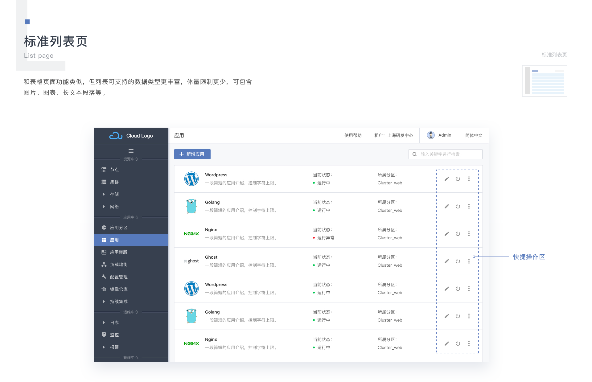
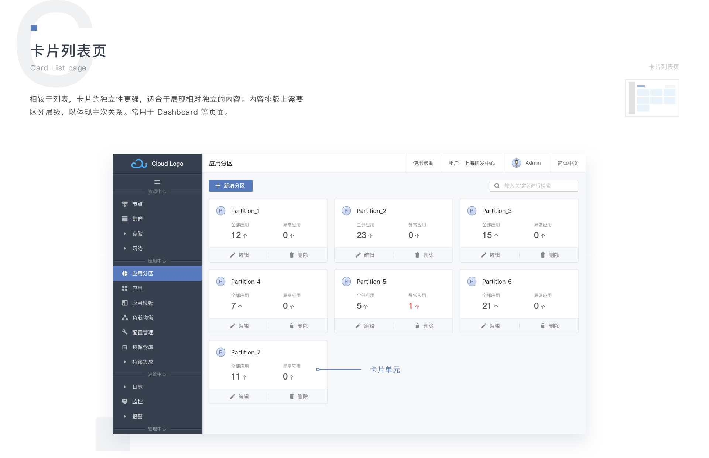
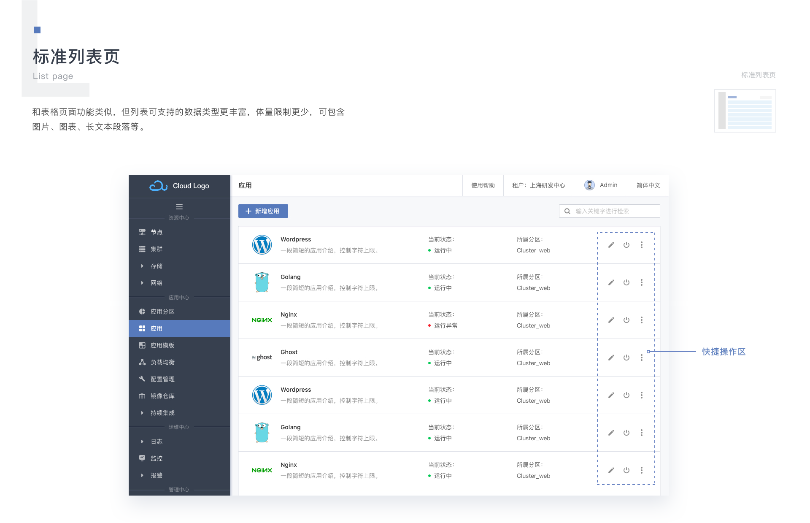
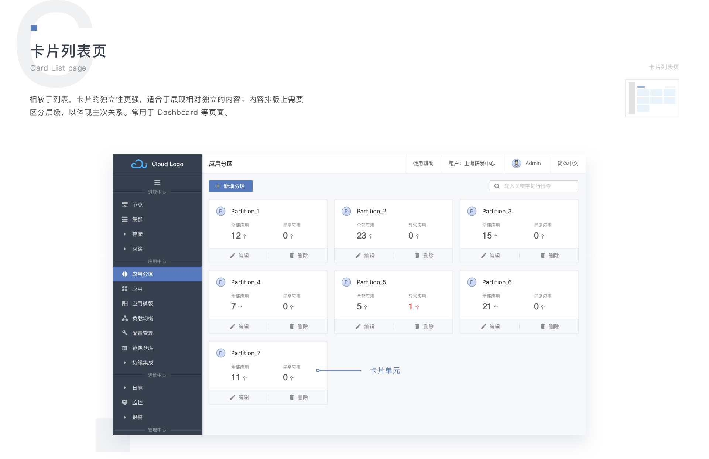
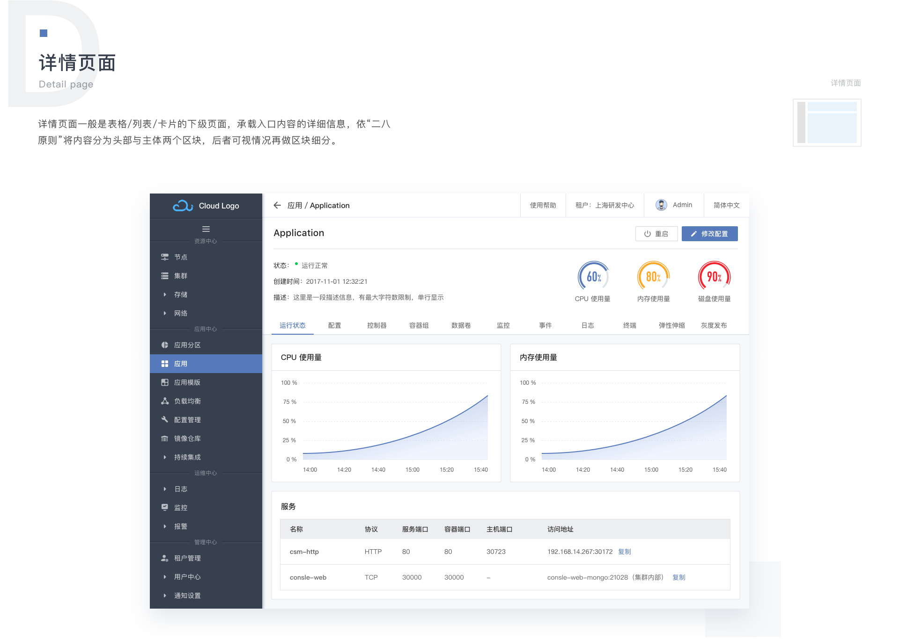
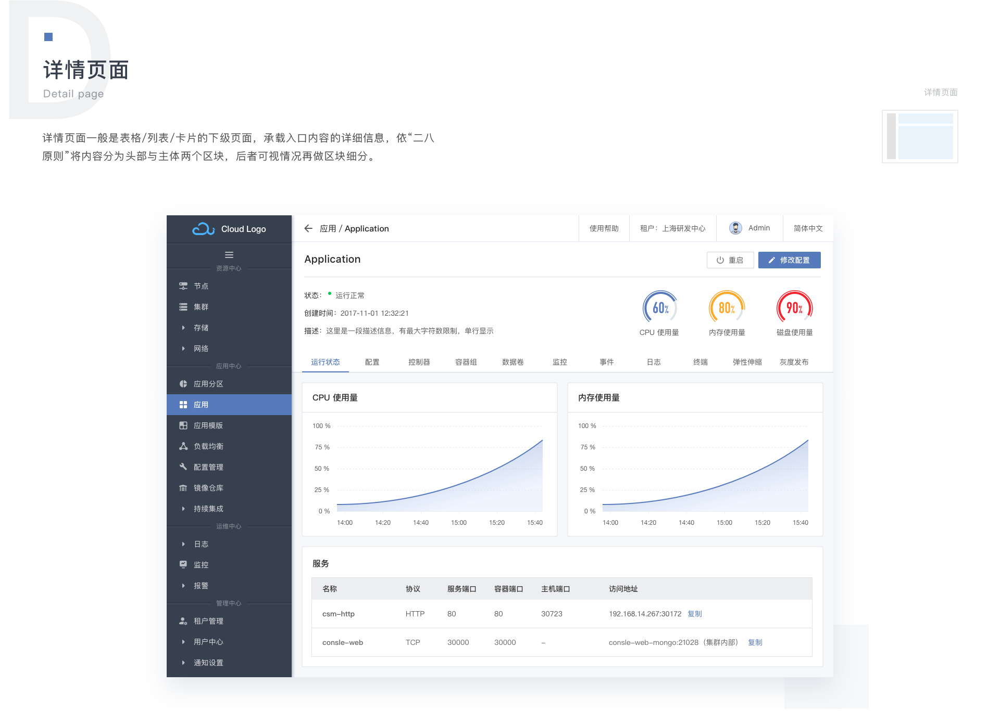

Caicloud UI
容器云平台界面设计
这是一个企业级的云计算平台项目，其技术背景是当下热门的容器云和 K8s，平台对外提供 Paas 服务。此次设计的任务是其后台用户界面。
在设计语言上，我们采用了 Ant design（蚂蚁体验科技推出的中后台设计语言），遵循其基于“自然”和“确定”的设计价值观；同时 “功能 - 模版 - 组件” 的设计模式可以很好的对全局和细节进行把控，使得页面呈现清晰、合理、高效。
而在页面空间的打造上，我们受到了 Material Design 的启发，以三维建筑思维对页面元素进行布局，每类元素都有固定的空间高度，最终使整个界面呈现一种理性之美。

 



 
